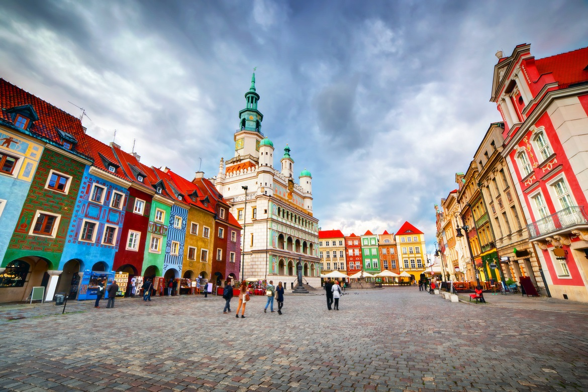

Місце і дата народження: м. Черкаси, 7 травня 2003 рік
Ліцей "ФІМЛІ" м. Черкаси, НТУУ "КПІ", м. Київ
Хоббі:
Улюблені фільми:
Улюблені книги:
По́знань (пол. Poznań, лат. Posnania, нім. Posen) — місто на правах повіту в центральній частині західної Польщі, розташоване на Поозер'ї Великопольському, на річці Варта, в гирлі Цибіни. Історична столиця Великопольщі, від 1999 р. адміністративний центр Великопольського воєводства і познанського повіту.
Місто є важливим автомобільним та залізничним вузлом, тут також функціонує міжнародне летовище Познань-Лавиця. Познань — великий осередок промисловості, технологій, торгівлі, логістики, спорту та туризму.
Познань — єдине місто, яке згадується в словах польського гімну. Покровителями міста Познані є апостоли Петро і Павло, святі католицької церкви. Свято міста день та його покровителів відзначається 29 червня.
